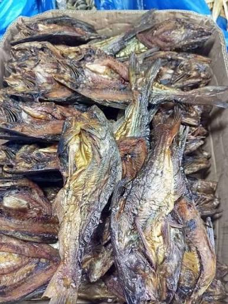
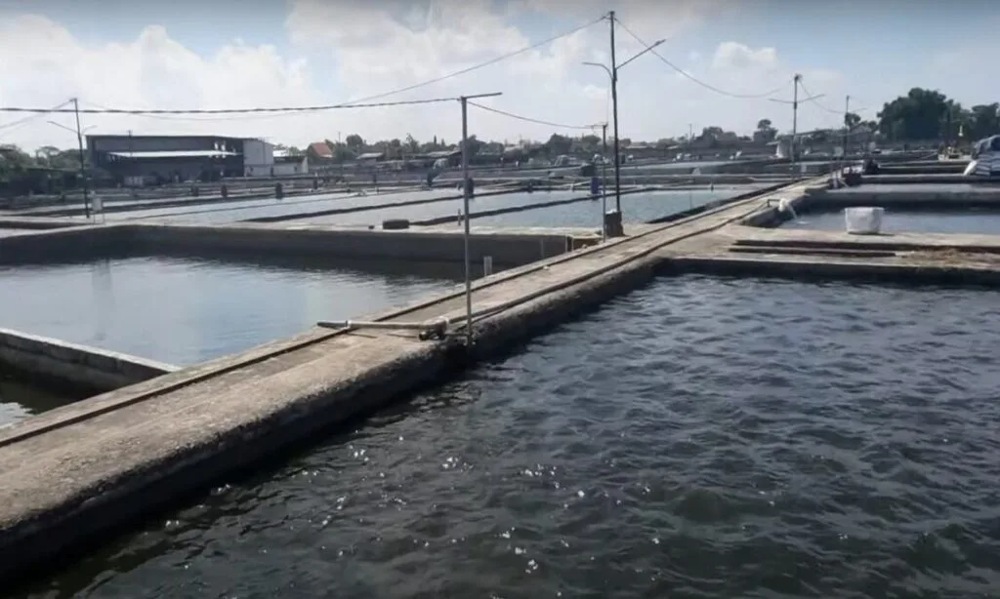
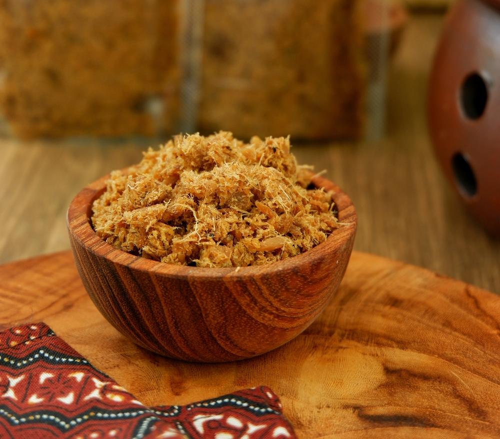
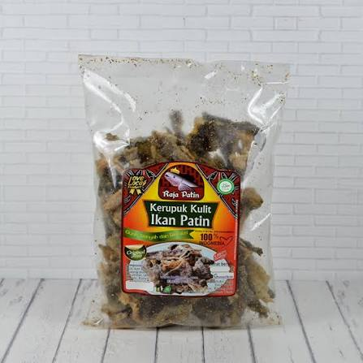
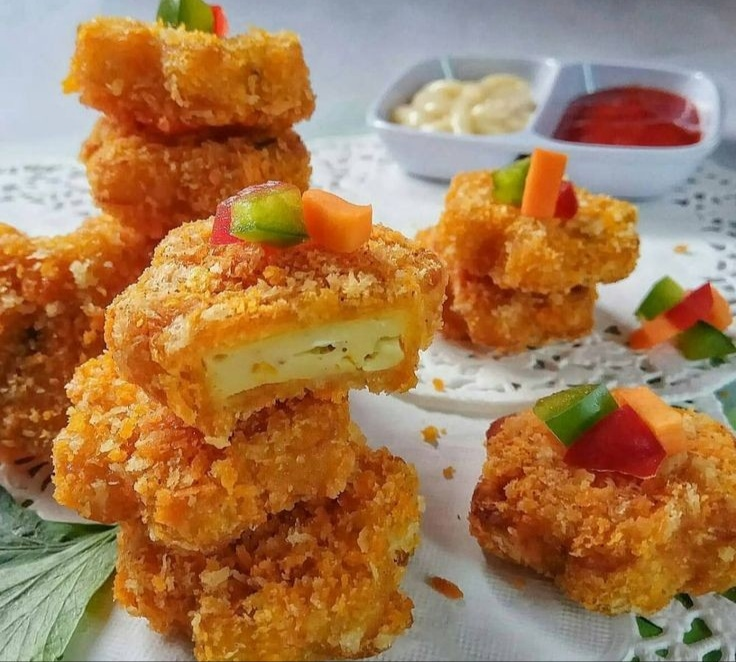

Tentang Kami
Salai Patin Mak Ijah adalah usaha rumahan di Desa Wisata Kampung Patin, Desa Koto Mesjid, Kecamatan XIII Koto Kampar. Kami mengolah ikan patin dari kolam warga menjadi produk yang lezat dan tahan lama.
Mengapa memilih produk kami?
- Ikan dipanen segar dari kolam warga desa.
- Diasapi secara tradisional tanpa pengawet.
- Dikemas rapat sehingga aman dikirim ke luar kota.
Produk Unggulan



Daftar Harga
| Produk | Kemasan | Harga (Rp) |
|---|---|---|
| Salai patin | 250 gram | 45.000 |
| 500 gram | 85.000 | |
| Abon patin | 250 gram | 60.000 |
| Kerupuk kulit patin | 200 gram | 25.000 |
| Nugget patin | 500 gram | 40.000 |
| Harga belum termasuk ongkos kirim. | ||
Cara Pemesanan
- 1 Pilih produk dan jumlah yang diinginkan.
- 2 Kirim pesan WhatsApp berisi nama, alamat, dan pesanan.
- 3 Lakukan pembayaran sesuai total yang kami kirimkan.
- 4 Pesanan dikirim paling lambat 1×24 jam.
Lokasi dan Kontak
Desa Koto Mesjid, Kec. XIII Koto Kampar
Kabupaten Kampar, Riau
WhatsApp: 0813-7734-6090
Email: muhammadfisabilillah889@gmail.com
Jam buka: Senin–Sabtu, 08.00–17.00 WIB